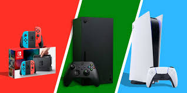
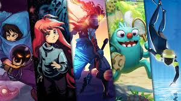
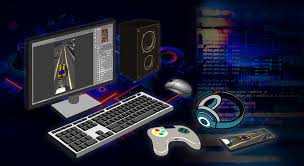
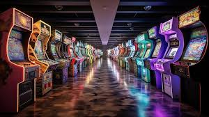

Bienvenidos a nuestro blog dedicado al apasionante mundo de los videojuegos. Aquí encontrarás todo lo relacionado con juegos de acción, juegos de aventura, juegos de rol (RPG), y mucho más. Si eres un entusiasta de los juegos de estrategia o prefieres la adrenalina de los juegos de disparos (FPS), este es tu lugar.
Las Mejores Consolas de Videojuegos
En nuestra sección de consolas de videojuegos, exploramos las últimas novedades de PlayStation, Xbox y Nintendo Switch. También te ofrecemos guías para PC gaming, incluyendo recomendaciones sobre hardware y periféricos para mejorar tu experiencia de juego.
Realidad Virtual y Nuevas Tecnologías
La realidad virtual (VR) está revolucionando la forma en que jugamos. En nuestros artículos, te mantendremos al día con las últimas tendencias y lanzamientos en el mundo de los juegos VR. Descubre cómo la inteligencia artificial en videojuegos está transformando la industria y creando experiencias más inmersivas.

Comunidad Gamer y eSports
La comunidad gamer es un componente vital del mundo de los videojuegos. Aquí podrás leer sobre los principales torneos de videojuegos y el crecimiento de los eSports. Entérate de las últimas noticias y eventos en el mundo competitivo, y conoce a los influencers de videojuegos que están marcando tendencia.
Desarrollos y Noticias de Videojuegos
Nuestro equipo de expertos te mantendrá informado sobre las últimas noticias de videojuegos y lanzamientos de videojuegos. También analizamos las actualizaciones de videojuegos, así como los remakes y remasterizaciones que están causando sensación.
Guías, Trucos y Críticas de Videojuegos
No te pierdas nuestras críticas de videojuegos, donde evaluamos los títulos más esperados y los clásicos que debes jugar. Además, ofrecemos trucos y guías de juegos para ayudarte a superar los desafíos más difíciles y sacar el máximo provecho de tus partidas.

Juegos Indie y Retro
Si eres fan de los juegos indie y los juegos retro, este es tu espacio. Exploramos las joyas ocultas del pasado y los nuevos títulos que están innovando el género. Descubre cómo los juegos de mesa digitales y los juegos de cartas digitales están ganando popularidad.
Diseño y Desarrollo de Videojuegos
Para aquellos interesados en el desarrollo de videojuegos, ofrecemos recursos y consejos sobre diseño de niveles y modding de videojuegos. Aprende de los mejores en la industria y descubre cómo se crean los mundos que tanto amas explorar.
Música y Arte en Videojuegos
La música de videojuegos y los gráficos de videojuegos son elementos esenciales que enriquecen nuestra experiencia. Exploramos cómo la música y el arte contribuyen a la inmersión en los mundos virtuales. Desde los épicos soundtracks de videojuegos que acompañan nuestras aventuras hasta el arte conceptual que da vida a los personajes y entornos, descubre cómo estos aspectos influyen en nuestra percepción y disfrute de los videojuegos.

Juegos para Todos los Gustos
Ya sea que prefieras los juegos de plataformas, los juegos de puzzles, los juegos de construcción o los juegos educativos, aquí encontrarás algo que te encantará. Exploramos una amplia variedad de géneros y estilos para satisfacer los gustos de todos los jugadores. Desde experiencias relajantes hasta desafíos intensos, hay un juego esperándote.
Únete a Nuestra Comunidad
Invitamos a todos los gamers a unirse a nuestra comunidad, compartir sus experiencias y participar en discusiones sobre sus juegos favoritos. Conéctate con otros jugadores apasionados, comparte consejos y trucos, y mantente al tanto de las últimas noticias y eventos en el mundo de los videojuegos. Juntos, podemos hacer de este blog un lugar vibrante y emocionante para todos los amantes de los videojuegos.